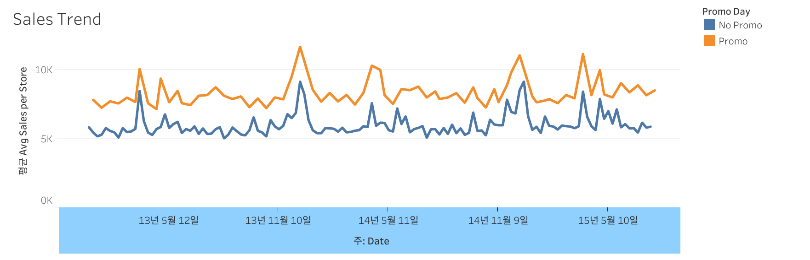
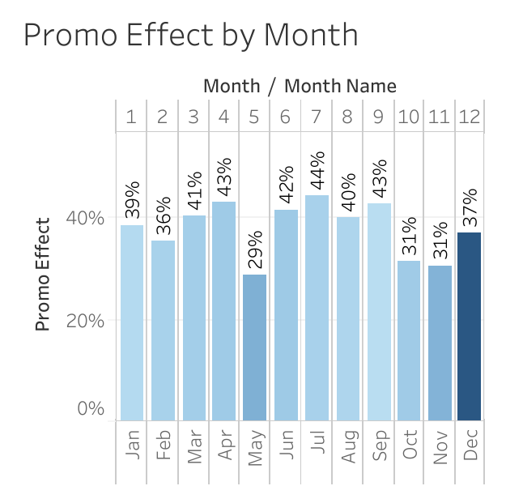
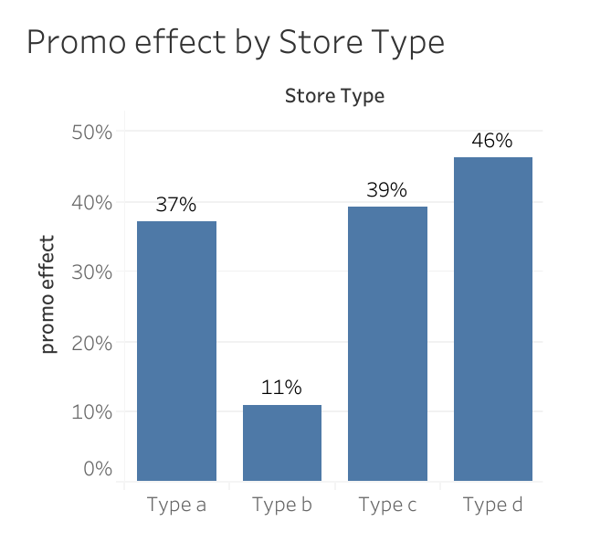

When do promotions work,
and how much do competitors hurt?
An analysis of about 1.0 million daily sales records from 1,115 Rossmann drugstores in Germany. I measured how the same promotion performs at different times, and how much sales fall when a competitor opens nearby.
Promotions work best when demand is weak: +38% mid-month vs. +29% around paydays, and +43–44% in off-peak months vs. +29–31% in peak months.
A competitor opening within 500m cuts sales by 20%, and the drop does not recover for more than 12 months.
Same promotion, different timing?
Does the same promotion work differently depending on when it runs? When a competitor opens nearby, how much do sales drop, and for how long?

How my approach changed when the data disagreed with my assumptions
| Topic | Initial view | Change | Result |
|---|---|---|---|
| Competitors | Compared stores with each other: stores with a competitor within 250m had the highest sales. | Suspected a location effect (busy urban areas); switched to comparing each store before vs. after a competitor opened. | A consistent drop: −20% within 500m, −12% at 0.5–2km, −4% beyond 2km. |
| Promotions | Treated the effect as one average (+39%), but it ranged from +22% to +57% by weekday. | Split the effect by timing: start/end vs. mid-month, peak vs. off-peak months. | The same "promotions work best when demand is weak" pattern on both cuts. |
| Rejected | Sales rose 4–7% after stores joined the ongoing loyalty promotion (Promo2). | Checked the trend before joining: enrolled stores had been declining for 7 months. | Could not separate the gain from natural recovery, so it is not reported as an effect. |
Sales drop and do not recover
Sales of 173 stores that gained a new competitor, compared with 572 stores whose competition did not change (store and month fixed effects).

The closer the competitor, the larger the drop: −20% within 500m, −12% at 0.5–2km, −4% beyond 2km. Adding this variable cut the forecast error for affected stores from 24.6% to 21.6%.
Promotions work best when demand is weak
Promotion lift = sales on promotion days vs. non-promotion days in the same store. Darker bars are months with higher baseline sales.

- No promotion fatigue: the second week of back-to-back promotions (+36%) is no weaker than a normal promotion (+38%, p = 0.55).
- No rebound dip: the Saturday right after a promotion equals the Saturday before (+0.7%, p = 0.63).
- Timing matters more than frequency.
Store type and basket size

High-basket stores seemed to gain less from promotions, but the gap disappears once store type is controlled for. Basket size matters for paydays instead: start/end-of-month uplift is +11.8% in the lowest-spend 20% of stores vs. +9.5% in the highest. Weekday pattern and volatility show no link.
Process
- Data check — 180 stores missing 6 months of 2014; 98% closed on Sundays; promotions run chain-wide (Mon–Fri, every other week).
- Exploration — plotted sales trends, promotion effects, store types, competitor distance and day-of-month patterns, and listed what looked odd.
- Spotting a trap — stores near competitors sold more, which reflected busy urban locations; switched to comparing each store with itself over time.
- Testing — store and month fixed-effects regressions; standard errors clustered by promotion week (72), since all stores run promotions on the same days; checked pre-trends before making causal claims.
- Explanatory power — held out Jun–Jul 2015, trained on earlier data only, and added the new variables one at a time.
Forecast error on two unseen months (Jun–Jul 2015)
| Model (variables added one at a time) | All stores | Stores with a new competitor |
|---|---|---|
| 1. Base: weekday, month, promotion, holidays, trend | 20.9% | 24.6% |
| 2. + start/end of month, promotion × start/end of month | 20.8% | 24.5% |
| 3. + after competitor opening × distance | 20.5% | 21.6% |
| 4. + start/end of month × store basket size | 20.5% | 21.6% |
Forecast error = RMSPE, the Kaggle competition metric. The competitor variable cut error for affected stores by 3.0 percentage points; the start/end-of-month and basket-size variables explain differences in promotion effects but improved the forecast itself by 0.1 points or less.
Limitations
- No discount or promotion-cost data, so effects are on sales, not profit.
- Competitor opening dates are monthly.
- Forecast comparisons use a linear model, so absolute error (~20%) is above top competition scores.